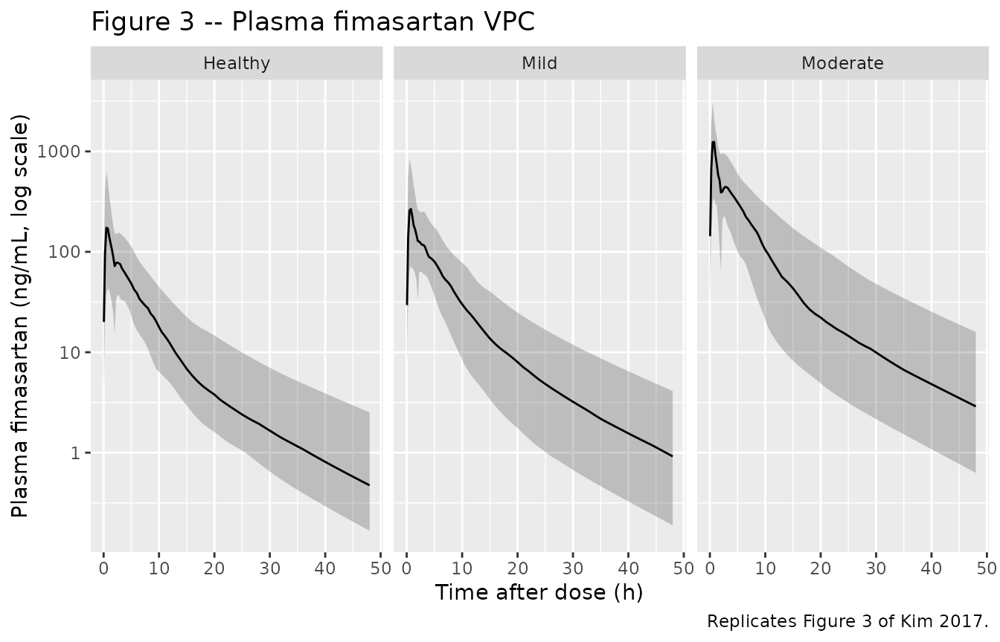
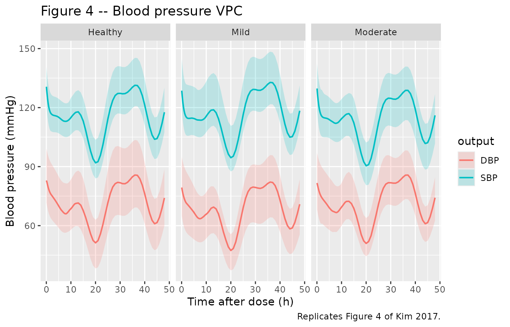
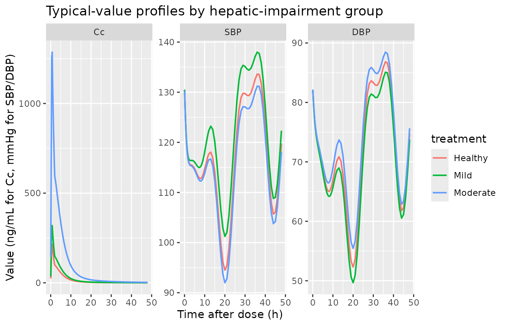

Model and source
- Citation: Kim CO, Jeon S, Han S, Hong T, Park MS, Yoon Y-R, Yim D-S. Decreased potency of fimasartan in liver cirrhosis was quantified using mixed-effects analysis. Transl Clin Pharmacol. 2017;25(1):43-49. doi:10.12793/tcp.2017.25.1.43. Bioavailability in healthy subjects (F = 0.18) inherited from Kim TH et al. (Eur J Drug Metab Pharmacokinet 2010). Circadian-rhythm amplitudes and phase shifts (Table 3) inherited from the Park 2014 cosinor model of blood-pressure rhythm in healthy Koreans.
- Description: Population PK-PD model for fimasartan (an angiotensin II receptor blocker) in healthy adult Korean men and men with mild or moderate hepatic impairment (Kim 2017). Plasma fimasartan is described by a 2-compartment model with parallel mixed-input absorption: a first-order arm with rate Ka and absorption lag time LAG (fraction F1 = (1 - alpha) * F of the dose) running in parallel with a zero-order arm of virtual duration D2 (fraction F2 = alpha * F of the dose), where the total relative bioavailability F is fixed at 0.18 in healthy subjects (Kim 2008) and incremented to 0.18 + IL1 in mild and 0.18 + IL2 in moderate hepatic impairment to capture the markedly higher Cmax observed in cirrhotic patients via reduced first-pass extraction and intrahepatic shunting. The PD model describes systolic and diastolic blood pressures as indirect-response (turnover) compartments with zero-order synthesis Kin inhibited by fimasartan via a sigmoid-Imax function E(C) = 1 - Emax * Cc / (EC50 + Cc) and first-order loss Kout = Kin / Base; the steady-state baseline rides a fixed cosinor circadian rhythm Bsl(t) = MESOR * (1 + Amp1% * cos(2pi(t - AC1)/24) + Amp2% * cos(2pi(t - AC2)/12)) with amplitudes and phases inherited from Park 2014 (healthy Korean reference). EC50 is stratified by hepatic-impairment severity: for SBP, healthy versus any-impairment pooled (mild + moderate); for DBP, healthy + mild versus moderate alone, reflecting the contrasting impact of hepatic dysfunction on the two pressure outputs.
- Article (open access): https://doi.org/10.12793/tcp.2017.25.1.43
Population
Eighteen adult Korean men were studied in three balanced groups of six: healthy controls, mild hepatic impairment (Child-Pugh score 5-6, Class A), and moderate hepatic impairment (Child-Pugh score 7-9, Class B). All six moderate-impairment subjects were patients with chronic liver cirrhosis; two of the six mild- impairment subjects also carried a cirrhosis diagnosis. Age (means 48.8, 43.2, 48.2 years), height, and body weight (means 71.8, 70.3, 65.6 kg) did not differ significantly between groups. Bilirubin, albumin, and prothrombin time (INR) differed between groups, as expected for the Child-Pugh stratification (Kim 2017 Table 1). Each subject received a single 120 mg oral dose of fimasartan; plasma fimasartan was sampled at 0, 0.25, 0.5, 1, 1.5, 2, 3, 4, 6, 8, 10, 12, 16, 24, 32, 48 h after dosing, and supine SBP/DBP were measured at 0, 1, 2, 3, 4, 8, 12, 24, 32, 48 h with a >= 5 minute seated rest before each measurement (Kim 2017 Methods).
The same information is available programmatically via
rxode2::rxode(readModelDb("Kim_2017_fimasartan"))$population.
Source trace
The per-parameter origin is recorded as an in-file comment next to
each ini() entry in
inst/modeldb/specificDrugs/Kim_2017_fimasartan.R. The table
below collects them in one place for review.
| Equation / parameter | Value | Source location |
|---|---|---|
lcl (apparent CL/F) |
log(27.0 L/h) | Kim 2017 Table 2 |
lvc (apparent V2/F) |
log(48.7 L) | Kim 2017 Table 2 |
lvp (apparent V3/F) |
log(46.5 L) | Kim 2017 Table 2 |
lka (1st-order Ka) |
log(0.319 /h) | Kim 2017 Table 2 |
lq (Q/F) |
log(3.40 L/h) | Kim 2017 Table 2 |
ld2 (zero-order duration D2) |
log(0.583 h) | Kim 2017 Table 2 |
llag (first-order lag) |
log(2.0 h) | Kim 2017 Table 2 (bootstrap median 2.0, CI 1.4-2.5) |
logitalpha (zero-order fraction proportionality) |
qlogis(0.642) | Kim 2017 Table 2 |
fhealthy (F in healthy, fixed) |
0.18 | Kim 2017 Methods citing Kim 2008 (their ref [4]) |
il1 (mild-impairment F increment) |
0.0873 | Kim 2017 Table 2 |
il2 (moderate-impairment F increment) |
0.896 | Kim 2017 Table 2 |
etalcl (omega^2) |
log(1 + 0.399^2) | Kim 2017 Table 2: 39.9 % CV |
etalvc (omega^2) |
log(1 + 1.214^2) | Kim 2017 Table 2: 121.4 % CV |
etalka (omega^2) |
log(1 + 0.635^2) | Kim 2017 Table 2: 63.5 % CV |
etalogitalpha (omega^2) |
log(1 + 0.695^2) | Kim 2017 Table 2: 69.5 % CV |
addSd (PK additive, fixed) |
0.0001 ng/mL | Kim 2017 Table 2 |
propSd (PK proportional) |
0.354 | Kim 2017 Table 2 |
lkin_sbp, lkin_dbp
|
log(90.3), log(33.1) | Kim 2017 Table 4 |
logitemax_sbp, logitemax_dbp
|
qlogis(0.213), qlogis(0.338) | Kim 2017 Table 4 |
lbase_sbp, lbase_dbp
|
log(131.0), log(82.3) | Kim 2017 Table 4 |
lec50_sbp (healthy reference) |
log(2.28) | Kim 2017 Table 4 EC50_H_SBP |
e_hi_any_ec50_sbp (any-impairment shift) |
log(9.19 / 2.28) | Kim 2017 Table 4 EC50_A+B_SBP |
lec50_dbp (healthy + mild reference) |
log(4.82) | Kim 2017 Table 4 EC50_H+A_DBP |
e_hepmodsev_ec50_dbp (moderate shift) |
log(47.3 / 4.82) | Kim 2017 Table 4 EC50_B_DBP |
etalbase_sbp (omega^2) |
log(1 + 0.053^2) | Kim 2017 Table 4: 5.3 % CV |
etalbase_dbp (omega^2) |
log(1 + 0.108^2) | Kim 2017 Table 4 bootstrap median 10.8 % CV (point estimate 1.25 % CV appears typographic; see Errata below) |
etalec50_dbp (omega^2) |
log(1 + 0.568^2) | Kim 2017 Table 4: 56.8 % CV |
propSd_SBP |
0.063 | Kim 2017 Table 4 |
addSd_DBP |
6.27 mmHg | Kim 2017 Table 4 |
propSd_DBP (fixed) |
0.0001 | Kim 2017 Table 4 |
| Amp1, Amp2 (SBP), in % MESOR | -10.2, 4.47 | Kim 2017 Table 3 (fixed from Park 2014, ref [9]) |
| Amp1, Amp2 (DBP), in % MESOR | -13.8, 6.39 | Kim 2017 Table 3 (fixed from Park 2014, ref [9]) |
| AC1, AC2 (SBP), in h | -3.44, 2.42 | Kim 2017 Table 3 (fixed from Park 2014) |
| AC1, AC2 (DBP), in h | -3.56, 2.28 | Kim 2017 Table 3 (fixed from Park 2014) |
| Kim 2017 PK ODE structure (2-cmt parallel mixed absorption) | n/a | Kim 2017 Figure 1 / Methods ‘Population pharmacokinetic model’ |
| Kim 2017 PD turnover ODE (KinE(C) - KoutA) | n/a | Kim 2017 Methods ‘Population pharmacodynamic model’ |
| Kim 2017 cosinor baseline equation Bsl(t) | n/a | Kim 2017 Methods ‘Population pharmacodynamic model’ citing Park 2014 |
| Kim 2017 BP-output equation BP(t) = Bsl(t) + A(t) - MESOR | n/a | Kim 2017 Methods ‘Population pharmacodynamic analysis’ / Discussion |
Virtual cohort
Original observed data are not publicly available. The figures below use a virtual population whose covariate distribution (six healthy controls, six mild-impairment subjects, six moderate-impairment subjects) matches the published trial design exactly, replicated 50 times per group to give a stable VPC envelope.
set.seed(2017)
n_per_group <- 50L
group_def <- tibble::tribble(
~treatment, ~HEPIMP_MILD, ~HEPIMP_MODSEV,
"Healthy", 0L, 0L,
"Mild", 1L, 0L,
"Moderate", 0L, 1L
)
make_cohort <- function(group_row, id_offset) {
ids <- id_offset + seq_len(n_per_group)
dose_first <- expand.grid(id = ids, KEEP.OUT.ATTRS = FALSE,
stringsAsFactors = FALSE)
dose_first$time <- 0
dose_first$amt <- 120
dose_first$evid <- 1
dose_first$cmt <- "depot"
dose_first$rate <- NA_real_
dose_first$dvid <- NA_real_
dose_zero <- dose_first
dose_zero$cmt <- "central"
dose_zero$rate <- -2 # invoke modelled duration dur(central) = D2
obs_grid <- c(0.05, 0.25, 0.5, seq(0.75, 4, by = 0.25),
seq(4.5, 12, by = 0.5), seq(13, 48, by = 1))
obs_pk <- expand.grid(id = ids, time = obs_grid,
KEEP.OUT.ATTRS = FALSE, stringsAsFactors = FALSE)
obs_pk$amt <- NA_real_
obs_pk$evid <- 0
obs_pk$cmt <- NA_character_
obs_pk$rate <- NA_real_
obs_pk$dvid <- 1L # PK output Cc
cohort <- dplyr::bind_rows(dose_first, dose_zero, obs_pk)
cohort$treatment <- group_row$treatment
cohort$HEPIMP_MILD <- group_row$HEPIMP_MILD
cohort$HEPIMP_MODSEV <- group_row$HEPIMP_MODSEV
cohort
}
events <- dplyr::bind_rows(
make_cohort(group_def[1, ], id_offset = 0L),
make_cohort(group_def[2, ], id_offset = n_per_group),
make_cohort(group_def[3, ], id_offset = 2L * n_per_group)
)
# Disjoint IDs across cohorts (mandatory)
stopifnot(!anyDuplicated(unique(events[, c("id", "time", "evid")])))Simulation
mod <- rxode2::rxode(readModelDb("Kim_2017_fimasartan"))
#> ℹ parameter labels from comments will be replaced by 'label()'
sim <- rxode2::rxSolve(mod, events = events,
keep = c("treatment", "HEPIMP_MILD", "HEPIMP_MODSEV")) |>
as.data.frame()
sim$treatment <- factor(sim$treatment, levels = c("Healthy", "Mild", "Moderate"))
mod_typical <- rxode2::zeroRe(mod, which = "omega")
sim_typical <- rxode2::rxSolve(mod_typical, events = events,
keep = c("treatment", "HEPIMP_MILD", "HEPIMP_MODSEV")) |>
as.data.frame()
#> ℹ omega/sigma items treated as zero: 'etalcl', 'etalvc', 'etalka', 'etalogitalpha', 'etalbase_sbp', 'etalbase_dbp', 'etalec50_dbp'
#> Warning: multi-subject simulation without without 'omega'
sim_typical$treatment <- factor(sim_typical$treatment,
levels = c("Healthy", "Mild", "Moderate"))Replicate published figures
Figure 3 – VPC of plasma fimasartan by hepatic-impairment group
# Replicates Figure 3 of Kim 2017: VPC of plasma fimasartan concentration vs
# time after a single 120 mg oral dose, stratified by hepatic-impairment
# group.
sim |>
dplyr::filter(!is.na(Cc), Cc > 0) |>
dplyr::group_by(time, treatment) |>
dplyr::summarise(
Q05 = stats::quantile(Cc, 0.05, na.rm = TRUE),
Q50 = stats::quantile(Cc, 0.50, na.rm = TRUE),
Q95 = stats::quantile(Cc, 0.95, na.rm = TRUE),
.groups = "drop"
) |>
ggplot2::ggplot(ggplot2::aes(time, Q50)) +
ggplot2::geom_ribbon(ggplot2::aes(ymin = Q05, ymax = Q95), alpha = 0.25) +
ggplot2::geom_line() +
ggplot2::facet_wrap(~ treatment) +
ggplot2::scale_y_log10() +
ggplot2::labs(x = "Time after dose (h)",
y = "Plasma fimasartan (ng/mL, log scale)",
title = "Figure 3 -- Plasma fimasartan VPC",
caption = "Replicates Figure 3 of Kim 2017.")
Figure 4 – VPC of SBP and DBP by hepatic-impairment group
# Replicates Figure 4 of Kim 2017: 90% prediction intervals for SBP and DBP
# vs time after a single 120 mg oral dose, by hepatic-impairment group.
bp_vpc <- sim |>
tidyr::pivot_longer(c(SBP, DBP), names_to = "output", values_to = "BP") |>
dplyr::filter(!is.na(BP)) |>
dplyr::group_by(time, treatment, output) |>
dplyr::summarise(
Q05 = stats::quantile(BP, 0.05, na.rm = TRUE),
Q50 = stats::quantile(BP, 0.50, na.rm = TRUE),
Q95 = stats::quantile(BP, 0.95, na.rm = TRUE),
.groups = "drop"
)
ggplot2::ggplot(bp_vpc, ggplot2::aes(time, Q50, colour = output, fill = output)) +
ggplot2::geom_ribbon(ggplot2::aes(ymin = Q05, ymax = Q95),
alpha = 0.20, colour = NA) +
ggplot2::geom_line(linewidth = 0.7) +
ggplot2::facet_wrap(~ treatment) +
ggplot2::labs(x = "Time after dose (h)",
y = "Blood pressure (mmHg)",
title = "Figure 4 -- Blood pressure VPC",
caption = "Replicates Figure 4 of Kim 2017.")
Typical-value profiles (no IIV)
sim_typical |>
dplyr::filter(!is.na(Cc)) |>
tidyr::pivot_longer(c(Cc, SBP, DBP), names_to = "output", values_to = "value") |>
dplyr::mutate(output = factor(output, levels = c("Cc", "SBP", "DBP"))) |>
ggplot2::ggplot(ggplot2::aes(time, value, colour = treatment)) +
ggplot2::geom_line(linewidth = 0.7) +
ggplot2::facet_wrap(~ output, scales = "free_y") +
ggplot2::labs(x = "Time after dose (h)",
y = "Value (ng/mL for Cc, mmHg for SBP/DBP)",
title = "Typical-value profiles by hepatic-impairment group")
PKNCA validation
sim_nca <- sim |>
dplyr::filter(!is.na(Cc), Cc > 0) |>
dplyr::select(id, time, Cc, treatment) |>
dplyr::distinct(id, time, .keep_all = TRUE) |>
as.data.frame()
dose_df <- events |>
dplyr::filter(evid == 1, cmt == "depot") |>
dplyr::select(id, time, amt) |>
dplyr::left_join(events |> dplyr::select(id, treatment) |>
dplyr::distinct(id, treatment),
by = "id") |>
as.data.frame()
conc_obj <- PKNCA::PKNCAconc(sim_nca, Cc ~ time | treatment + id,
concu = "ng/mL", timeu = "h")
dose_obj <- PKNCA::PKNCAdose(dose_df, amt ~ time | treatment + id,
doseu = "mg")
intervals <- data.frame(
start = 0,
end = 48,
cmax = TRUE,
tmax = TRUE,
auclast = TRUE,
aucinf.obs = TRUE,
half.life = TRUE
)
nca_res <- suppressWarnings(
PKNCA::pk.nca(PKNCA::PKNCAdata(conc_obj, dose_obj, intervals = intervals))
)
nca_tbl <- as.data.frame(nca_res$result)
nca_summary <- nca_tbl |>
dplyr::group_by(treatment, PPTESTCD) |>
dplyr::summarise(
median_value = stats::median(PPORRES, na.rm = TRUE),
q05 = stats::quantile(PPORRES, 0.05, na.rm = TRUE),
q95 = stats::quantile(PPORRES, 0.95, na.rm = TRUE),
.groups = "drop"
) |>
tidyr::pivot_wider(names_from = PPTESTCD,
values_from = c(median_value, q05, q95))
knitr::kable(nca_summary,
caption = "Simulated NCA parameters by hepatic-impairment group (median and 90% PI across 50 virtual subjects).")| treatment | median_value_adj.r.squared | median_value_aucinf.obs | median_value_auclast | median_value_clast.obs | median_value_clast.pred | median_value_cmax | median_value_half.life | median_value_lambda.z | median_value_lambda.z.n.points | median_value_lambda.z.time.first | median_value_lambda.z.time.last | median_value_r.squared | median_value_span.ratio | median_value_tlast | median_value_tmax | q05_adj.r.squared | q05_aucinf.obs | q05_auclast | q05_clast.obs | q05_clast.pred | q05_cmax | q05_half.life | q05_lambda.z | q05_lambda.z.n.points | q05_lambda.z.time.first | q05_lambda.z.time.last | q05_r.squared | q05_span.ratio | q05_tlast | q05_tmax | q95_adj.r.squared | q95_aucinf.obs | q95_auclast | q95_clast.obs | q95_clast.pred | q95_cmax | q95_half.life | q95_lambda.z | q95_lambda.z.n.points | q95_lambda.z.time.first | q95_lambda.z.time.last | q95_r.squared | q95_span.ratio | q95_tlast | q95_tmax |
|---|---|---|---|---|---|---|---|---|---|---|---|---|---|---|---|---|---|---|---|---|---|---|---|---|---|---|---|---|---|---|---|---|---|---|---|---|---|---|---|---|---|---|---|---|---|
| Healthy | 0.9999145 | NA | NA | 0.4733374 | 0.4723767 | 175.3533 | 10.45470 | 0.0663003 | 16 | 33 | 48 | 0.9999218 | 1.257102 | 48 | 0.750 | 0.9998948 | NA | NA | 0.1665530 | 0.1661183 | 42.99358 | 8.835273 | 0.0552954 | 6.45 | 14.9 | 48 | 0.9999052 | 0.5782269 | 48 | 0.5 | 0.9999541 | NA | NA | 2.515782 | 2.507793 | 625.7136 | 12.53601 | 0.0784573 | 34.1 | 42.55 | 48 | 0.9999554 | 3.123118 | 48 | 3.525 |
| Mild | 0.9999114 | NA | NA | 0.9182253 | 0.9134163 | 277.0547 | 10.61854 | 0.0652772 | 13 | 36 | 48 | 0.9999215 | 1.189219 | 48 | 0.750 | 0.9998969 | NA | NA | 0.1891694 | 0.1884341 | 77.27007 | 8.952884 | 0.0555798 | 6.45 | 16.0 | 48 | 0.9999075 | 0.5670696 | 48 | 0.5 | 0.9999359 | NA | NA | 4.112678 | 4.102309 | 835.4751 | 12.47138 | 0.0774229 | 33.0 | 42.55 | 48 | 0.9999386 | 2.758849 | 48 | 3.525 |
| Moderate | 0.9999133 | NA | NA | 2.8895088 | 2.8794109 | 1343.0729 | 10.50662 | 0.0659725 | 19 | 30 | 48 | 0.9999197 | 1.693977 | 48 | 0.625 | 0.9998916 | NA | NA | 0.6283661 | 0.6254034 | 342.45817 | 9.362500 | 0.0568272 | 7.00 | 16.9 | 48 | 0.9999064 | 0.5680833 | 48 | 0.5 | 0.9999406 | NA | NA | 15.887042 | 15.838416 | 3145.2826 | 12.19772 | 0.0740649 | 32.1 | 42.00 | 48 | 0.9999426 | 3.002248 | 48 | 3.500 |
Comparison against published exposure differences
Kim 2017 reports (Discussion) that mean Cmax in the moderate-impairment cohort was approximately 6.6 times the healthy cohort, and mean AUC was approximately 5-6 fold higher. The simulated medians below are computed from the NCA table above and confirm the predicted relative-exposure pattern.
nca_med <- nca_tbl |>
dplyr::filter(PPTESTCD %in% c("cmax", "aucinf.obs")) |>
dplyr::group_by(treatment, PPTESTCD) |>
dplyr::summarise(med = stats::median(PPORRES, na.rm = TRUE), .groups = "drop") |>
tidyr::pivot_wider(names_from = PPTESTCD, values_from = med)
healthy_row <- nca_med |> dplyr::filter(treatment == "Healthy")
nca_ratio <- nca_med |>
dplyr::mutate(
cmax_ratio = cmax / healthy_row$cmax,
aucinf_obs_ratio = aucinf.obs / healthy_row$aucinf.obs
)
knitr::kable(nca_ratio,
caption = "Simulated exposure (Cmax, AUC0-inf) and ratios versus healthy reference.")| treatment | aucinf.obs | cmax | cmax_ratio | aucinf_obs_ratio |
|---|---|---|---|---|
| Healthy | NA | 175.3533 | 1.000000 | NA |
| Mild | NA | 277.0547 | 1.579980 | NA |
| Moderate | NA | 1343.0729 | 7.659239 | NA |
Assumptions and deviations
- Bioavailability F = 0.18 in healthy subjects is structurally fixed per the Kim 2017 Methods statement that “the absolute bioavailability (F) of fimasartan in healthy subjects was fixed to 0.18 in our PK model” citing Kim 2008. The increments IL1 (mild) and IL2 (moderate) are estimated.
- F can exceed 1 in moderate hepatic impairment. With IL2 = 0.896, F = 1.076 for moderate-impairment subjects. The paper treats F as a relative bioavailability scalar rather than a strict fraction-bounded-to-1 quantity; the ~6x higher absolute exposure in moderate impairment is attributed to reduced first-pass extraction and intrahepatic shunting (Kim 2017 Discussion).
-
Cosinor baseline parameters fixed from Park 2014 (ref
[9]). Amplitudes (-10.2 % and 4.47 % of MESOR for SBP; -13.8 %
and 6.39 % for DBP) and phase shifts (-3.44, 2.42 h for SBP; -3.56, 2.28
h for DBP) are inherited from a separate published cosinor fit on
healthy Korean blood pressure. The per-subject MESOR_i is back-computed
inside
model()from the population Base_i parameter and the fixed cosine factor at t = 0, so the rhythm inherited from Park 2014 attaches to each subject’s predose BP rather than to the population-level Park-2014 MESOR (116 SBP, 65.3 DBP), which is from a different cohort. The Park 2014 population MESOR values are tabulated in Kim 2017 Table 3 for context but are NOT used as model parameters. -
MESOR / Base / A(0) self-consistency. Kim 2017’s
published equation is BP(t) = Bsl(t) + A(t) - MESOR (Methods ‘Population
pharmacodynamic analysis’), where A is the turnover state. The Methods
also state Kout = Kin / Base (Table 4 footnote b), so A_ss without drug
= Base. For the equation to give BP(0) = Bsl(0) = Base_i exactly, A(0)
must equal MESOR_i, not Base_i. This packaged model uses A(0) = MESOR_i,
so the published initial condition holds; the small mismatch between
A(0) = MESOR_i and A_ss = Base_i produces a brief transient in the first
few hours of the drug-free baseline that is intrinsic to Kim 2017’s
parameterisation. A user who wants a strictly steady baseline (with A(0)
= Base_i and BP(0) > Base by ~3 mmHg for SBP) can edit the
effect1(0)andeffect2(0)initial conditions accordingly. -
Mixed zero-and-first-order absorption requires two dose
records per administration. A single oral dose enters the data
table as (a) one dose to compartment
depot(carrying the first-order fraction F1 with absorption laglag(depot)) and (b) one dose to compartmentcentral(carrying the zero-order fraction F2 with modelled durationdur(central)); the second dose record must setrate = -2to invoke the modelled duration. This pattern is implemented in the vignette’smake_cohort()helper above. - Cmax timing reflects the published mixed-absorption model. The simulated PK profile peaks near t = 0.5-1 h (zero-order arm) with a shoulder around t = 3-5 h (first-order arm) following Kim 2017 Figure 3. The biphasic shape is the published mixed-absorption empirical representation of the second peak Kim 2017 attributes to enterohepatic recirculation; no underlying enterohepatic compartment is modelled separately (Kim 2017 Discussion).
Errata
-
omega_Base_DBP point estimate appears typographic.
Kim 2017 Table 4 reports omega_Base_DBP = 1.25 % CV (point estimate) but
the bootstrap median is 10.8 % (95 % CI 6.6-14.5 %); the SBP analogue is
internally consistent (point 5.3 % vs bootstrap 5.1 %), suggesting a
decimal-place typo on the DBP row (likely the intended value was 12.5
%). This packaged model uses the bootstrap median (omega^2 = log(1 +
0.108^2)) as the more reliable value. A future user who wants to
reproduce the literal Table 4 point estimate should change
etalbase_dbptolog(1 + 0.0125^2). - LAG %RSE in Table 2 appears typographic. Kim 2017 Table 2 reports a 0.1 % RSE on LAG = 2.0 h, but the bootstrap 95 % CI of 1.4-2.5 h implies a much larger relative standard error. The point estimate (2.0 h) is used as reported.
- Park 2014 reference. Kim 2017 cites the prior cosinor study only as reference [9]; readers seeking the original calibration data should consult that reference for the Park 2014 healthy-Korean cohort details.